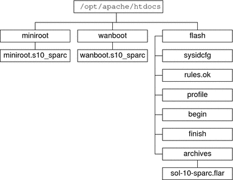
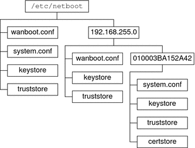

WAN Boot Requirements and Guidelines
The section describes the system requirements to perform a WAN boot installation.
Table 10-1 System Requirements for WAN Boot Installation
System and
Description |
Requirements |
|---|
WAN boot server – The WAN boot server is a web server that
provides the wanboot program, the configuration and security files, and the WAN boot
miniroot. |
Operating system – Solaris 9 12/03 OS, or compatible version Must be configured as web server Web server software must support HTTP 1.1 If you want to use digital certificates, the web server software must support HTTPS
|
Install server – The install server provides the Solaris Flash archive and custom
JumpStart files that are required to install the client. |
Available disk space – space for each Solaris Flash archive Media drive – CD-ROM or DVD-ROM drive Operating system – Solaris 9 12/03 OS, or compatible version
If the install server is
a different system than the WAN boot server, the install server must meet
these additional requirements.
Must be configured as a web server Web server software must support HTTP 1.1 If you want to use digital certificates, the web server software must support HTTPS
|
Client system – The remote system you want to install
over a WAN |
Memory - Minimum of 512 Mbytes of RAM CPU – UltraSPARC II processor minimum Hard disk – At least 2 Gbytes of hard disk space OBP – WAN boot-enabled PROM If the client does not have the appropriate PROM, the client must have a CD-ROM drive. To determine if your client has a WAN boot-enabled PROM, see To Check the Client OBP for WAN Boot Support.
|
(Optional) DHCP server – You can use a DHCP server to
provide client configuration information. |
If you are using a SunOS DHCP server, you must
perform one of the following tasks.
If the DHCP server is on a different
subnet than the client, you must configure a BOOTP relay agent. For more
information about how to configure a BOOTP relay agent, see Chapter 16, Configuring the DHCP Service (Tasks), in System Administration Guide: IP Services. |
(Optional) Logging
server – By default, all booting and installation log messages are displayed on
the client console during a WAN installation. If you want to view these
messages on another system, you can specify a system to serve as a
logging server. |
Must be configured as web server.
Note - If you use HTTPS during your
installation, the logging server must be the same system as the WAN boot
server.
|
(Optional) Proxy server – You can configure the WAN boot feature to use
an HTTP proxy during the download of the installation data and files. |
If the
installation uses HTTPS, the proxy server must be configured to tunnel HTTPS. |
Web Server Software Requirements and Guidelines
The web server software you use on your WAN boot server and
install server must meet the following requirements.
Operating system requirements – WAN boot provides a Common Gateway Interface (CGI) program (wanboot-cgi) that converts data and files into a specific format that the client machine expects. To perform a WAN boot installation with these scripts, the web server software must run on the Solaris 9 12/03 OS, or compatible version.
File size limitations – Your web server software might limit the size of the files you can transmit over HTTP. Check your web server documentation to make sure the software can transmit files that are the size of a Solaris Flash archive.
Note - The flarcreate command no longer has size limitations on individual files. You can create a Solaris Flash archive that contains individual files over 4 Gbytes.
For more information, see Creating an Archive That Contains Large Files in Solaris Express Installation Guide: Solaris Flash Archives (Creation and Installation).
SSL support – If you want to use HTTPS in your WAN boot installation, the web server software must support SSL version 3.
Server Configuration Options
You can customize the configuration of the servers that are required by WAN
boot to meet your network needs. You can host all the servers
on one system, or place the servers on multiple systems.
Single server – If you want to centralize the WAN boot data and files on one system, you can host all the servers on the same machine. You can administer all your different servers on one system, and you only need to configure one system as a web server. However, a single server might not be able to support the volume of traffic that is required for a large number of simultaneous WAN boot installations.
Multiple servers – If you want to distribute the installation data and files across your network, you can host these servers on multiple machines. You might set up a central WAN boot server, and configure multiple install servers to host Solaris Flash archives across your network. If you host the install server and logging server on independent machines, you must configure those servers as web servers.
Storing Installation and Configuration Files in the Document Root Directory
The wanboot-cgi program transmits the following files during a WAN boot installation.
wanboot program
WAN boot miniroot
Custom JumpStart files
Solaris Flash archive
To enable the wanboot-cgi program to transmit these files you must store these
files in a directory that is accessible to the web server software. One
way to make these files accessible is to place these files in the
document root on your web server.
The document root, or primary document directory, is the directory on your web server
where you store files you want to make available to clients. You
can name and configure this directory in your web server software. See your
web server documentation for more information about setting up the document root directory on
your web server.
You might want to create different subdirectories of the document root directory to
store your different installation and configuration files. For example, you might want to
create specific subdirectories for each group of clients that you want to install.
If you plan to install several different releases of the Solaris OS across
your network, you might create subdirectories for each release.
Figure 10-1 shows a basic sample structure for a document root directory. In this
example, the WAN boot server and install server are on the same machine.
The server is running the Apache web server software.
Figure 10-1 Sample Structure for Document Root Directory

This sample document directory uses the following structure.
The /opt/apache/htdocs directory is the document root directory.
The WAN boot miniroot (miniroot) directory contains the WAN boot miniroot.
The wanboot directory contains the wanboot program.
The Solaris Flash (flash) directory contains the custom JumpStart files that are required to install the client and the subdirectory archives. The archives directory contains the current Solaris release Flash archive.
Note - If the WAN boot server and the install server are different systems, you
might want to store the flash directory on the install server. Ensure that
these files and directories are accessible to the WAN boot server.
For information about how to create the document root directory, see your web
server documentation. For detailed instructions about how to create and store these installation
files, see Creating the Custom JumpStart Installation Files.
Storing Configuration and Security Information in the /etc/netboot Hierarchy
The /etc/netboot directory contains the configuration information, private key, digital certificate, and certificate
authority that are required for a WAN boot installation. This section describes the
files and directories you can create in the /etc/netboot directory to customize your WAN
boot installation.
Customizing the Scope of the WAN Boot Installation
During the installation, the wanboot-cgi program searches for the client information in
the /etc/netboot directory on the WAN boot server. The wanboot-cgi program converts
this information into the WAN boot file system, and then transmits the WAN
boot file system to the client. You can create subdirectories within the /etc/netboot
directory to customize the scope of the WAN installation. Use the following directory
structures to define how configuration information is shared among the clients that you want
to install.
Global configuration – If you want all the clients on your network to share configuration information, store the files that you want to share in the /etc/netboot directory.
Network-specific configuration – If you want only those machines on a specific subnet to share configuration information, store the configuration files that you want to share in a subdirectory of /etc/netboot. Have the subdirectory follow this naming convention.
/etc/netboot/net-ip
In this example, net-ip is the IP address of the client's subnet. For example, if you want all systems on the subnet with the IP address of 192.168.255.0 to share configuration files, create a /etc/netboot/192.168.255.0 directory. Then, store the configuration files in this directory.
Client-specific configuration – If you want only a specific client to use the boot file system, store the boot file system files in a subdirectory of /etc/netboot. Have the subdirectory follow this naming convention.
/etc/netboot/net-ip/client-ID
In this example, net-ip is the IP address of the subnet. client-ID is either the client ID that is assigned by the DHCP server, or a user-specified client ID. For example, if you want a system with the client ID 010003BA152A42 on the subnet 192.168.255.0 to use specific configuration files, create a /etc/netboot/192.168.255.0/010003BA152A42 directory. Then, store the appropriate files in this directory.
Specifying Security and Configuration Information in the /etc/netboot Directory
You specify the security and configuration information by creating the following files and
storing the files in the /etc/netboot directory.
wanboot.conf – This file specifies the client configuration information for a WAN boot installation.
System configuration file (system.conf) – This system configuration file specifies the location of the client's sysidcfg file and custom JumpStart files.
keystore – This file contains the client's HMAC SHA1 hashing key, 3DES or AES encryption key, and SSL private key.
truststore – This file contains the digital certificates of certificate signing authorities that the client should trust. These trusted certificates instruct the client to trust the server during the installation.
certstore – This file contains the client's digital certificate.
Note - The certstore file must be located in the client ID directory. See Customizing the Scope of the WAN Boot Installation for more information about subdirectories of the /etc/netboot directory.
For detailed instructions on how to create and store these files, see the
following procedures.
Sharing Security and Configuration Information in the /etc/netboot Directory
To install clients on your network, you might want to share security and
configuration files among several different clients, or across entire subnets. You can share
these files by distributing your configuration information throughout the /etc/netboot/net-ip/client-ID, /etc/netboot/net-ip, and /etc/netboot directories.
The wanboot-cgi program searches these directories for the configuration information that best fits the
client, and uses that information during the installation.
The wanboot-cgi program searches for client information in the following order.
/etc/netboot/net-ip/client-ID – The wanboot-cgi program first checks for configuration information that is specific to the client machine. If the /etc/netboot/net-ip/client-ID directory contains all the client configuration information, the wanboot-cgi program does not check for configuration information elsewhere in the /etc/netboot directory.
/etc/netboot/net-ip – If all the required information is not located in the /etc/netboot/net-ip/client-ID directory, the wanboot-cgi program then checks for subnet configuration information in the /etc/netboot/net-ip directory.
/etc/netboot – If the remaining information is not located in the /etc/netboot/net-ip directory, the wanboot-cgi program then checks for global configuration information in the /etc/netboot directory.
Figure 10-2 demonstrates how you can set up the /etc/netboot directory to customize your WAN
boot installations.
Figure 10-2 Sample /etc/netboot Directory

The /etc/netboot directory layout in Figure 10-2 enables you to perform the following WAN
boot installations.
When you install the client 010003BA152A42, the wanboot-cgi program uses the following files in the /etc/netboot/192.168.255.0/010003BA152A42 directory.
system.conf
keystore
truststore
certstore
The wanboot-cgi program then uses the wanboot.conf file in the /etc/netboot/192.168.255.0 directory.
When you install a client that is located on the 192.168.255.0 subnet, the wanboot-cgi program uses the wanboot.conf, keystore, and truststore files in the /etc/netboot/192.168.255.0 directory. The wanboot-cgi program then uses the system.conf file in the /etc/netboot directory.
When you install a client machine that is not located on the 192.168.255.0 subnet, the wanboot-cgi program uses the following files in the /etc/netboot directory.
wanboot.conf
system.conf
keystore
truststore
Storing the wanboot-cgi Program
The wanboot-cgi program transmits the data and files from the WAN boot server
to the client. You must ensure that this program is in a directory
on the WAN boot server that is accessible to the client. One method
to make this program accessible to the client is to store this program
in the cgi-bin directory of the WAN boot server. You might need to
configure your web server software to use the wanboot-cgi program as a
CGI program. See your web server documentation for information about CGI program requirements.
Digital Certificate Requirements
If you want to add security to your WAN boot installation, you
can use digital certificates to enable server and the client authentication. WAN boot can
use a digital certificate to establish the identity of the server or
the client during an online transaction. Digital certificates are issued by a certificate authority
(CA). These certificates contain a serial number, expiration dates, a copy of the
certificate holder's public key, and the certificate authority's digital signature.
If you want to require server or both client and server authentication during
your installation, you must install digital certificates on the server. Follow these guidelines
when you use digital certificates.
If you want to use digital certificates, the digital certificates must be formatted as part of a Public-Key Cryptography Standards #12 (PKCS#12) file.
If you create your own certificates, you must create the certificates as PKCS#12 files.
If you receive your certificates from third-party certificate authorities, request your certificates in the PKCS#12 format.
For detailed instructions on how to use PKCS#12 certificates during your WAN boot
installation, see (Optional) To Use Digital Certificates for Server and Client Authentication.